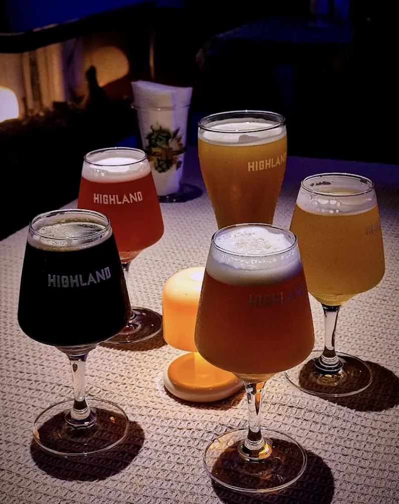
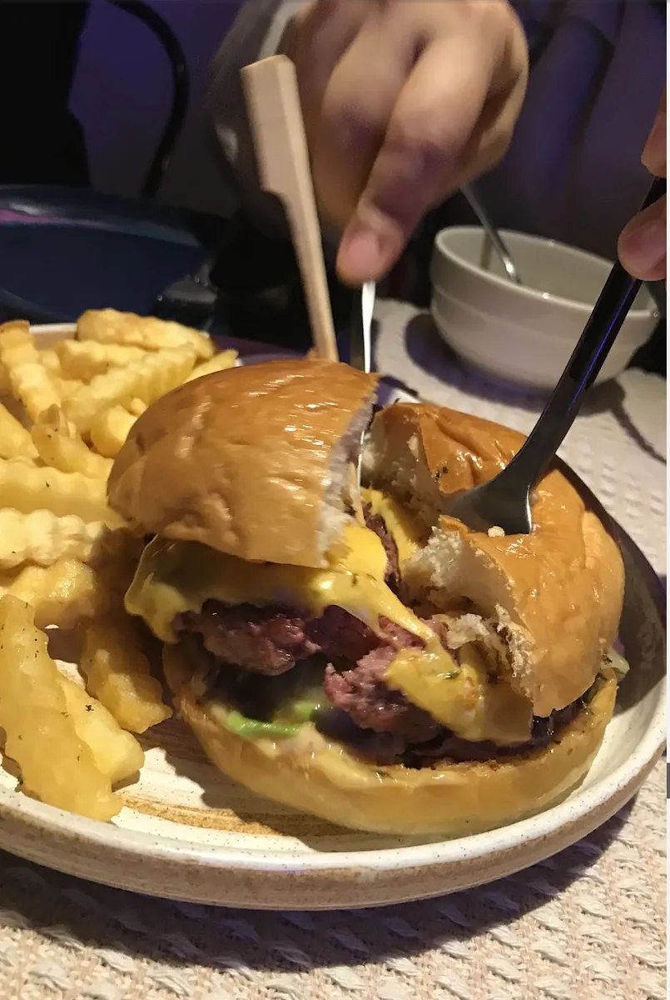
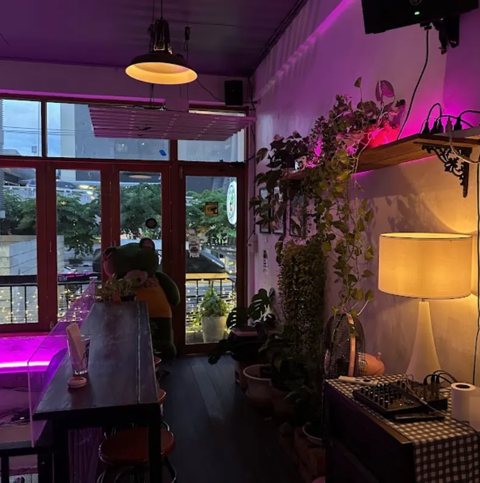
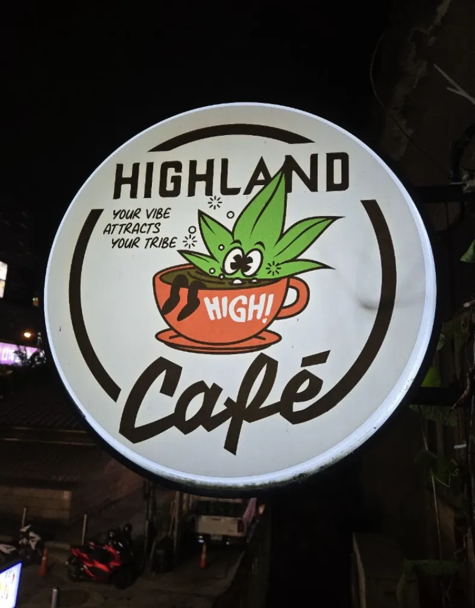
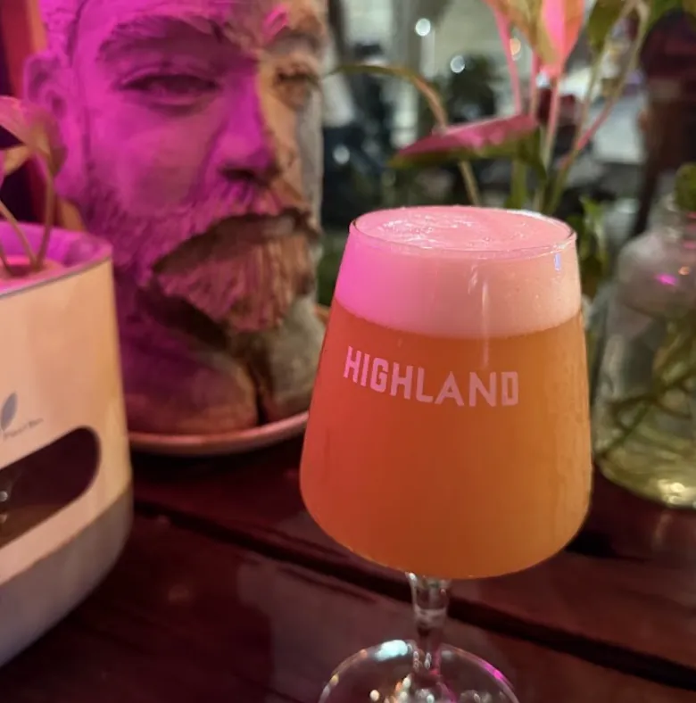
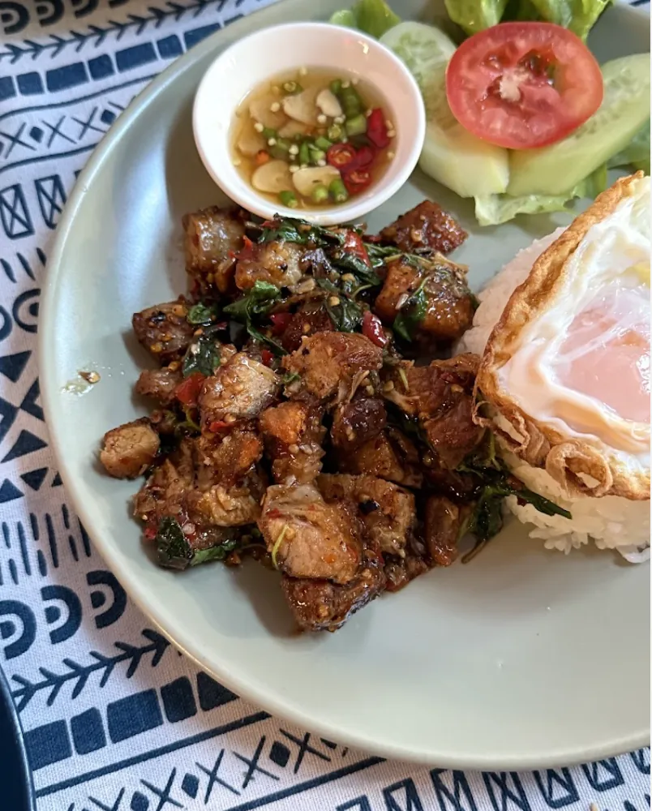
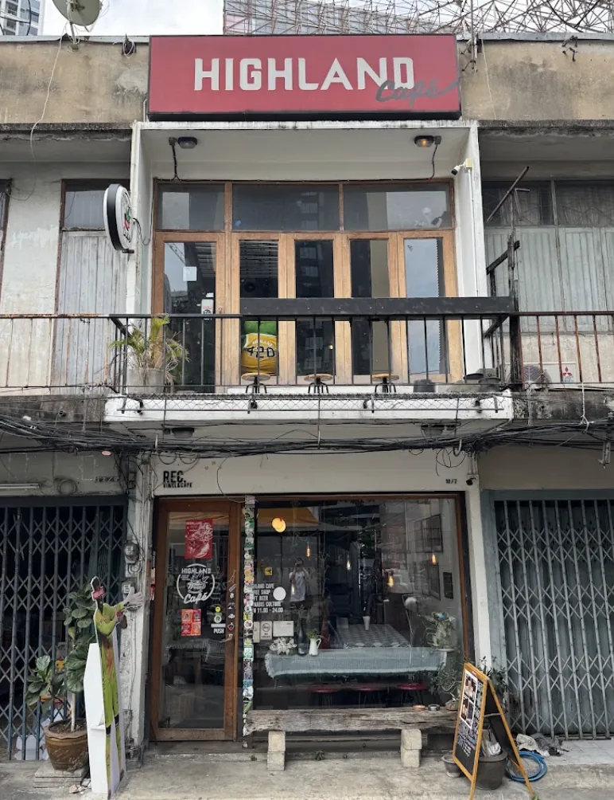
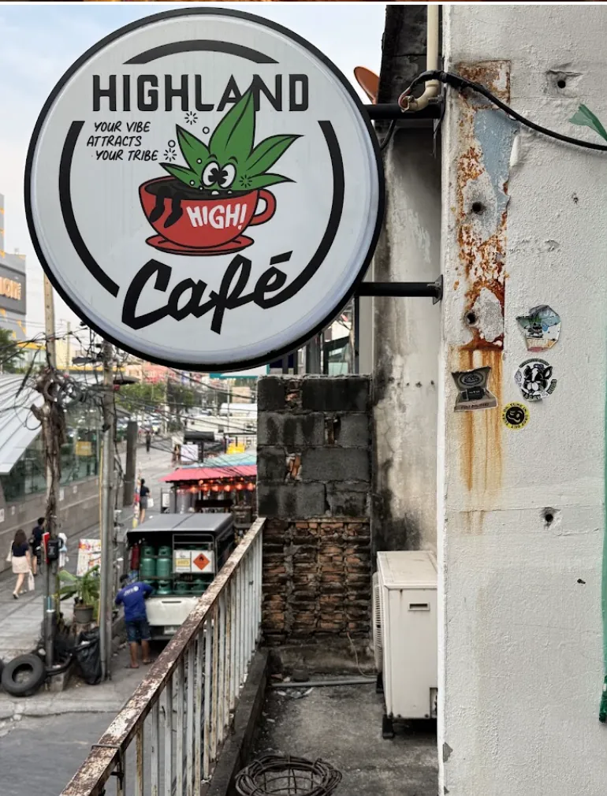
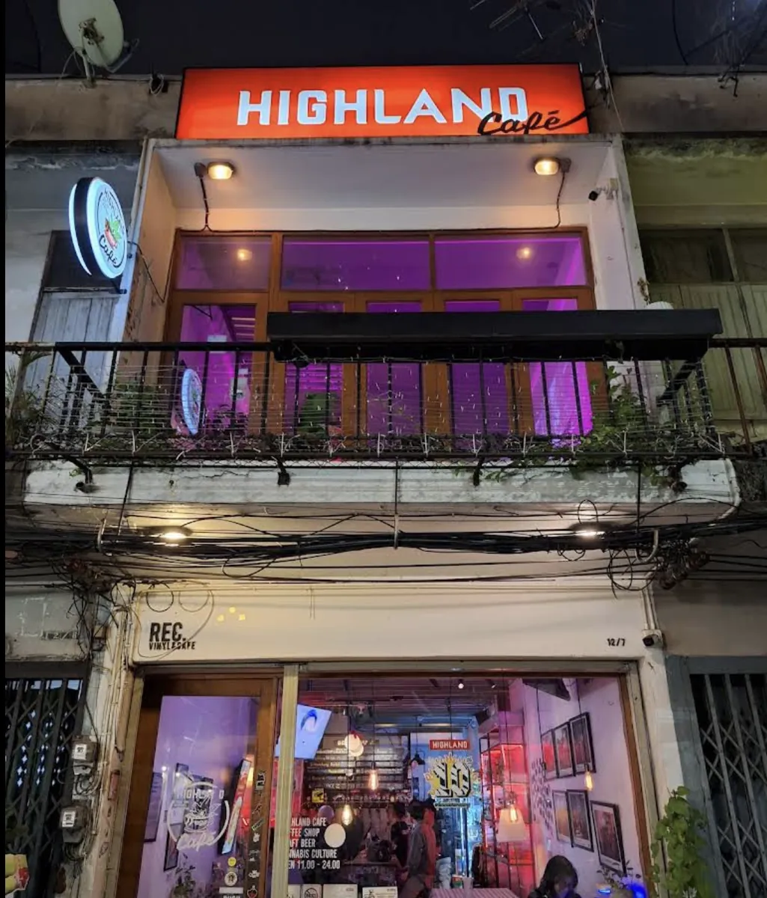

Sunset Sherbert
อินดิก้า฿450ต่อกรัม
หวานและหนักแน่น มีกลิ่นเบอร์รีและซิตรัสนำ ให้ความรู้สึกนุ่มนวลกว่าค่าเฉลี่ยบนชั้นวาง เหมาะสำหรับคนที่เพิ่งมาที่นี่ครั้งแรก
คุณอายุ 20 ปีขึ้นไปหรือไม่
ตามกฎหมายไทย ผลิตภัณฑ์กัญชาจำหน่ายให้เฉพาะผู้ที่มีอายุ 20 ปีบริบูรณ์ขึ้นไปเท่านั้น กรุณายืนยันอายุของคุณก่อนเข้าชมเว็บไซต์
ห้ามใช้ในผู้ที่มีอายุต่ำกว่า 20 ปี สตรีมีครรภ์ และสตรีให้นมบุตร เก็บให้พ้นมือเด็ก และห้ามขับขี่ยานพาหนะหลังการใช้
ลาดพร้าว · กรุงเทพฯ · ตั้งแต่ปี 2019
ร้านกัญชา ครัว และบาร์คราฟต์เบียร์ อยู่รวมกันในตึกเดียวบนถนนลาดพร้าว ไม่ต้องรีบ ไม่ต้องจอง สงสัยอะไรถามพนักงานได้เลย แล้วนั่งเล่นยาว ๆ ได้จนร้านปิด



มากกว่าเคาน์เตอร์ขายของ
เราไม่ได้อยากทำร้านที่ซื้อเสร็จแล้วเดินออก แต่อยากได้ที่ที่คนอยากนั่งอยู่นาน ๆ — เป็นทั้งร้านกัญชา เป็นครัว เป็นบาร์ และเป็นที่ที่คนนั่งคุยกันยาว ๆ จนร้านปิด
ไฮแลนด์โตมาจาก Highland Network กลุ่มที่อยู่เบื้องหลังงาน 420 ประจำปีของไทย ตอนแรกเราเปิดเป็นคาเฟ่ให้คนกลุ่มนี้มีที่นัดเจอกัน ส่วนชั้นวาง ครัว กับแท็ปเบียร์ค่อยตามมาทีหลัง
ทุกอย่างอยู่ใต้หลังคาเดียว
มีกัญชาท้องถิ่นราว 19 สายพันธุ์หมุนเวียนอยู่บนชั้นวางตลอดเวลา พร้อมผลิตภัณฑ์ CBD และอุปกรณ์ครบชุด ทั้งไปป์ บ้อง และกระดาษมวน พนักงานของเรายินดีอธิบายทีละกระปุก มากกว่าจะยื่นตัวที่แรงที่สุดให้คุณ
อาหารไทยที่ปรุงด้วยใบกัญชา — แบบเดียวกับที่ครัวไทยใช้กันมาหลายชั่วอายุคน ก่อนที่ใครจะเรียกมันว่าเทรนด์ เสิร์ฟตลอดช่วงค่ำ
คราฟต์เบียร์สดจากแท็ป และเครื่องดื่มไม่มีแอลกอฮอล์สำหรับคนที่ไม่ดื่ม ลูกค้าครึ่งหนึ่งในแต่ละคืนมาที่นี่เพื่อเบียร์และเพื่อนฝูง มากกว่าจะมาเพื่อชั้นวาง
พื้นที่สองชั้นเต็มไปด้วยงานศิลปะและแสงนีออนสีม่วง รวมถึงผู้คนที่พร้อมจะเล่าเรื่องกัญชาให้คุณฟังมากกว่าที่คุณถาม ไฮแลนด์คือผู้จัดเทศกาล 420 ประจำปี และทุกอย่างวางแผนกันที่ตึกนี้
เราสร้างห้องนี้ขึ้นมาก่อน
แล้วทุกอย่างจึงเติบโตตามมา Highland Café · ลาดพร้าว
เส้นทางของเรา
ไฮแลนด์เปิดประตูบนถนนลาดพร้าวด้วยกาแฟ อาหาร และบทสนทนา และกลายเป็นที่ที่คอมมูนิตี้ทั้งกลุ่มตามหามานาน เป็นพื้นที่ทำงานตอนกลางวัน และเป็นที่นัดพบตอนกลางคืน
ในวันที่ประเทศไทยเปิดกว้าง ไฮแลนด์กลายเป็นร้านแรกของประเทศที่วางกัญชาขึ้นชั้น คิวเริ่มยาวตั้งแต่ก่อนร้านเปิด และคนส่วนใหญ่ในวันนั้นยังเป็นลูกค้าประจำจนถึงวันนี้
Highland Network เป็นผู้จัดเทศกาล 420 ประจำปีของกรุงเทพฯ มาหลายปี และยังคงวางแผนงานกันที่ตึกนี้เหมือนเดิม
บรรยากาศในร้าน
พื้นที่สองชั้นบนถนนลาดพร้าว เต็มไปด้วยงานศิลปะตั้งแต่ผนังจรดเพดาน และแสงไฟแบบร้านแผ่นเสียงยามดึก สูบได้เฉพาะในโซนที่จัดไว้ให้เท่านั้น

ชั้นล่าง
ร้านกัญชา · บาร์ · ครัว

ป้ายหน้าร้าน
Your vibe attracts your tribe

เบียร์สด
คราฟต์เบียร์หมุนเวียน

ชั้นบน
โซนสูบที่จัดไว้ให้
แตะชื่อหมวดเพื่อดูรายการและราคา
ลองเลือกหมวดอื่น หรือถามพนักงานหน้าร้านว่าเพิ่งมีอะไรเข้ามา
06
ข้าวกะเพราทุกจานมาพร้อมไข่ดาว


12/7
ถนนลาดพร้าว
แขวงจอมพล เขตจตุจักร กรุงเทพมหานคร 10900 — อยู่ใกล้แยกลาดพร้าว เปิดประตูตอน 16:30 น. ทุกวันไม่มีวันหยุด
เวลาเปิดทำการ
เดินเข้ามาได้เลย · ไม่ต้องจอง · กรุณาพกบัตรประจำตัว
การเดินทาง
ร้านอยู่บนถนนลาดพร้าว ใกล้บริเวณแยกลาดพร้าว ซึ่งมีทั้งรถไฟฟ้าใต้ดินสายสีน้ำเงินและ BTS แนะนำให้ตั้งจุดหมายเป็นเลขที่ร้านแทนที่จะเป็นชื่อแยก เพราะถนนลาดพร้าวยาวมาก และเราอยู่ช่วงต้นถนน
บอกคนขับว่า 12/7 ถนนลาดพร้าว แขวงจอมพล เขตจตุจักร หรือใส่ที่อยู่ลงในแอปได้เลย ช่วงเย็นการจราจรบนถนนลาดพร้าวค่อนข้างหนาแน่น เผื่อเวลาไว้มากกว่าที่แอปคำนวณ
มองหาแสงนีออนสีม่วง — อาคารสองชั้นที่มีงานศิลปะเต็มกระจกหน้าร้าน สังเกตได้ไม่ยากเลย หากเลยไปถึงแยกแล้ว แปลว่าคุณเลยร้านมาแล้ว



ก่อนมาถึงร้าน
ส่วนใหญ่เป็นข้อกำหนดตามกฎหมายไทย ที่เหลือคือสิ่งที่ทำให้บรรยากาศในร้านดีขึ้น
ชั้นบน
โซนสูบ
เฉพาะพื้นที่ที่จัดไว้ให้
คำถามที่พบบ่อย
ไม่ต้องจอง เดินเข้ามาได้เลยทุกวันตั้งแต่ 16:30 น. หากมาเป็นกลุ่มใหญ่ แนะนำให้โทรแจ้งล่วงหน้าที่ 087-330-8506 เพื่อที่เราจะได้จัดที่นั่งให้เหมาะสม
สูบได้เฉพาะในโซนที่จัดไว้ให้เท่านั้น ไม่อนุญาตให้สูบภายในตัวร้าน พนักงานจะพาคุณไปยังโซนดังกล่าวเมื่อมาถึง ข้อนี้ไม่ใช่กฎที่ร้านตั้งขึ้นเอง แต่เป็นข้อกำหนดตามกฎหมาย
พาสปอร์ตหรือบัตรประจำตัวประชาชน ตามกฎหมายไทยห้ามจำหน่ายแก่ผู้ที่มีอายุต่ำกว่า 20 ปี และเราตรวจสอบทุกคน ขออภัยที่ไม่สามารถรับภาพถ่ายพาสปอร์ตในโทรศัพท์ได้ กรุณานำเอกสารตัวจริงมาด้วย
ได้แน่นอน ไฮแลนด์เริ่มต้นจากการเป็นคาเฟ่และยังทำหน้าที่นั้นอยู่เสมอ เรามีทั้งอาหาร คราฟต์เบียร์สด และเครื่องดื่มไม่มีแอลกอฮอล์ ลูกค้าประจำจำนวนไม่น้อยไม่เคยซื้ออะไรจากชั้นวางเลย
บอกพนักงานหน้าร้านได้เลยว่าเป็นครั้งแรก — นี่คือสิ่งที่มีประโยชน์ที่สุดที่คุณบอกเราได้ และไม่มีใครทำให้คุณรู้สึกอึดอัด เราจะเริ่มจากปริมาณที่น้อยกว่าที่คุณคิดว่าต้องการ นั่งลง สั่งอะไรสักอย่าง แล้วให้เวลากับมันสักพัก
ไม่ได้ การนำกัญชาออกนอกประเทศไทยผิดกฎหมาย และการนำเข้าประเทศปลายทางเกือบทุกประเทศก็ผิดกฎหมายเช่นกัน รวมถึงการใส่ในกระเป๋าโหลดใต้ท้องเครื่อง กรุณาใช้ให้หมดหรือทิ้งไว้ก่อนเดินทาง เรื่องนี้เราจริงจังมาก
ติดต่อเรา
ช่องทางที่เร็วที่สุดคือโทรเข้ามาในเวลาทำการ หรือทักมาทางอินสตาแกรม ซึ่งเป็นที่ที่เราอัปเดตว่ามีอะไรใหม่บนชั้นวาง และมีกิจกรรมอะไรในร้าน
เดินเข้ามาได้เลยทุกวัน ไม่ต้องจอง อย่าลืมพกพาสปอร์ตหรือบัตรประชาชนมาด้วย เพราะเราตรวจอายุทุกคน